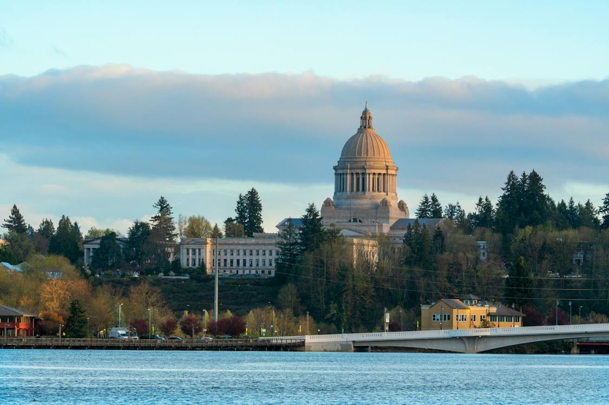

The Washington State Capitol
About Olympia
Located in the South Puget Sound region of Washington State, Olympia was officially incorporated on January 28, 1859 (The Washington Office of the Secretary of State, 2014). Since then, the city has grown into a sprawling urban and suburban mix with a population growing greatly to a hefty sum of about 55,700 (Washington Cities by population, n.d.) people as of 2022.
Places to visit in Olympia
- The Washington State Capitol
- The Olympic Flight Museum
- The Olympia Downtown Historic District
- The Mount Rainier National Park